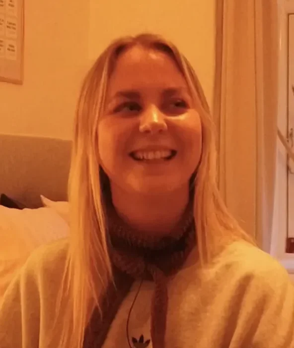

04
Grundlæggende indhold - videosite
I temaet grundlæggende indhold fik vi stillet opgaven at skulle lave et videosite, der tog udgangspunkt i basal brug af Premiere Pro og Audition. Dette skulle give os færdigheder til fremtidig producering af mindre videoprojekter.
Her lavede vi en interview video, hvor vi gjorde brug af forskellige slags framing, b-rolls, colorgrading, beskæring og storyboard.
